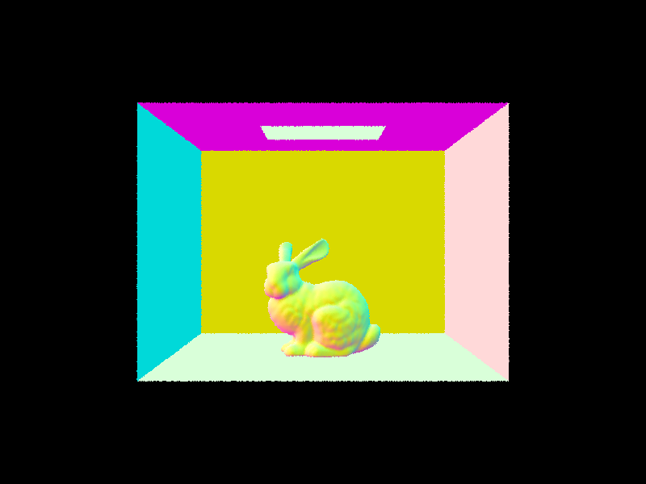
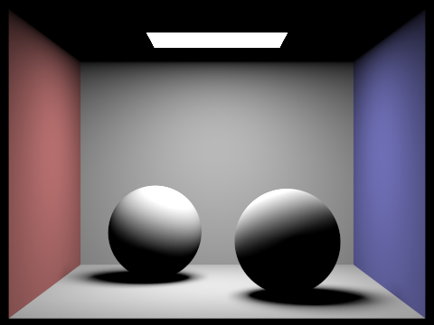

|
|

|

|

|
Project 3-1 follows the steps of building a path tracer. We begin by generating camera rays that cross from camera to world space and also calibrate how our algorithms generates pixel samples. Then, we implement ray-triangle and ray-circle intersection in order to be able to render these types of shapes. Part 2 follows the construction of a Bounding Volume Hierarchy, a data structure that partitions parts of a mesh and facilitates a speed-up of our intersection algorithms. With this, we move on to direct and global illumination in Parts 3 and 4, essentially sampling pixels and estimating their radiance via Monte Carlo estimation. Global illumination in particular is a recursive algorithm that samples more than one bounce of light to achieve greater "visual richness." Lastly, Adaptive Sampling is implemented in Part 5. This method speeds up our algorithms by detecting when sampling of a pixel has converged, utilizing statistics and confidence intervals. This project has been challenging but rewarding. Rendering images was not a trivial feat and paying attention to even the smallest details made the difference between a perfect and a "bug art" render.
The first step of the ray generation process is generating a camera ray. This is done by taking in a normalized point in image space, translating it into camera sensor space and using it to generate a ray in camera space and then finally transforming this ray back into world space. Next, we sample several random, generated rays, calculating a Monte Carlo estimate for the "scene radiance" in each pixel. Then, ray-triangle intersection was implemented using the Moller Trumbore algorithm and ray-sphere intersection was implemented with the provided quadratic equation.
As mentioned above, we implemented the Moller Trumbore algorithm in order
to enable triangle intersection. Essentially, we perform matrix
multiplication as outlined in the slide linked here.
The 3D vector that is the result of the matrix multiplication offers a
t value and two barycentric coordinates, both of which can be
used to determine if an intersection truly occurs. Additionally, the
barycentric coordinates are used to calculate the surface normal at the
intersection point on the triangle.
|
|
|
|
|
|
To implement BHVAccel::construct_bvh(), we first create a new
BBox for the current BVHNode, loop over all
Primitives and expand() the BBox with
each of the Primitive's bounding boxes. Then, the current
BVHNode is actually created with the BBox, and its
start and end are set. If the number of
Primitives in the list between start and
end is less than the max_leaf_size, then this
current BVHNode should just be returned as a leaf node.
Otherwise, it is not a leaf node, and we must split it into a left and right
child. Our heuristic to choose a split point begins with choosing an axis to
split on, and then choosing a point on that axis with which we partition the
Primitives. We chose to split on the median primitive centroid
along the longest axis of the bounding box as this divides the bounding box
into two child bounding boxes with a (roughly) equal number of
Primitives. Splitting on the longest axes keeps the bounding
boxes relatively more uniform in size rather than long rectangular prisms. To
split on the median primitive, we first std::sort() the
std::vector of primitives with a custom comparator
function that compares the longest axis coordinate of each primitive's
bounding box's centroid (its center point in 3D space). Then, we simply
create a new std::vector for the middle
element of the sorted vector. start and end still
point to the first and last primitive in the vector, respectively, and so the
left child node recursive call gets all primitives between start
to halfway_pt, and the right child node recursive call gets all
primitives between halfway_pt to end.
|

|
|
|
|
|
With BVH acceleration and our simple heuristic of splitting on the median
primitive centroid along the longest axis of the bounding box, we get extreme
speed up in render times. All times were measured on the Hive to maintain
consistency and to compare with the times of the staff solution on the Hive
specified in the spec. As shown in the following images, the render time of
cow.dae without BVH acceleration is 41.3434 seconds, while its
render time with BVH acceleration is 0.0918 seconds, which is a 450x speed
up! The render time of maxplanck.dae without BVH acceleration is
370.4354 seconds, while its render time with BVH acceleration is 0.1190 seconds,
producing a 3113x speed up. Finally the render time of CBlucy.dae
without BVH acceleration is 975.9085 seconds, while its render time without
BVH acceleration is 0.3816 seconds, giving a 2557x speed up.
|
|
|
|
|
|
|
|
|
|
|
|
The direct lighting function was implemented in one way by sampling uniformly in a hemisphere or estimating
only directly from the light sources. Both implementations employed a variation of Monte Carlo estimation. Both
implementations utilized the hit_p hit point of the camera ray in the scene and
return a Vector3D of the radiance of the scene at that hit_p. For hemisphere sampling,
we sample by calling hemisphereSampler->get_sample() for
scene->lights.size() * ns_area_light times, ultimately generating a sample ray with originating
from the hit point, in a direction towards a sample in the hemisphere. If this sample ray intersects our bvh,
we then collect the emission where necessary and calculate the proportion of radiance that gets reflected
(returned by the f function we implemented). Finally, we multiply these values together and
normalize by the probability of sampling the above ray. At the very end, we normalize our total sum result by
the total number of samples taken and return the estimated radiance.
Importance sampling, follows largely the same algorithm, but we iterate over the scene->lights
of a scene instead, ensuring to sample point lights only once. In both importance and hemisphere sampling
algorithms, we are using a small EPS_F
constant to avoid intersecting with the hit point and/or the light itself (task 4), updating the sample ray's
min_t and max_t accordingly. For the importance sampling algorithm, we check for
NON-intersections in order to calculate a radiance. Sampling a light source and detecting an intersection
indicates that the hit point is a shadow, and won't have a radiance. The same multiplication and normalization of
factors were calculated and summed for the Monte Carlo estimation for this importance sampling algorithm.
| Uniform Hemisphere Sampling | Light Sampling |
|---|---|
|
|
|
|
|

|

|
|
|
|
|
|
|
|
This exhibit changes the amount of light rays each image is rendered with. Evidently, as the number of samples per area light increases, the amount of noise decreases. This makes sense as, with more samples of each light, we are able to render the color of each pixel with higher accuracy and, therefore, less noise.
Comparing the results found between CBspheres_lambertian.dae and CBbunny.dae, we see
that the results obtained from importance sampling each light are far less noisy. In importance sampling,
the transition between whites (lights) and blacks (shadows) are smoother and the light source itself is
rendered with cleaner borders rather than a blur/halo, which appears in hemisphere sampling.
An interesting comparison would be the rendering of dragon.dae. With light importance sampling, we see
the correct render of the dragon with all its details and shadows. However, we see an entirely black image. This
is because the scene is lit with a point light. With hemisphere sampling, the probability of sampling the point
light is very low, and so not a lot of images of the dragon are sampled. However, with importance sampling, we
know exactly where the light is in the scene, and so we are able to render the details of the dragon with this
algorithm.
Indirect lighting is lighting resulting from recursive bounces past the first
bounce. To implement indirect lighting, we first implement
PathTracer::at_least_one_bounce_radiance(). This function calls
PathTracer::one_bounce_radiance() and then checks whether it
should recursively call itself to estimate the higher bounces. We sample the
current intersection's BSDF using BSDF::sample_f().
This function returns the BSDF reflectance $f_r$ and writes out a sampled
direction $w_i$ and its probability density function evaluated at $w_i$.
We create a sample ray with direction $w_i$ transformed to world space and
originating from hit_p, the original intersection point. The
sample ray's min_t value should be EPS_F to avoid
intersection at the origin with the current object in the scene. Its
depth value should be the original ray's depth - 1
to decrement the remaining maximum depth/number of recursive calls. Then,
we intersect the sample ray with the BVH of the scene to find
the next intersection point. If the sample ray doesn't intersect anything
in the scene, we simply return L_out, which is just the value
of one_bounce_radiance() at this point. Then we check if the
current ray has more depth left. If so, we use Russian Roulette with
continuation_prob = 1.0 - termination_prob = 1.0 - 0.35 to
determine whether we make a recursive call and sum the calculated reflection
equation value into L_out. Finally, the function returns
L_out once the recursion terminates.
|
|
|
|
|
|

|

|
On the left, we see CBspheres_lambertian.dae rendered with only
direct illumination. This was done by only summing the
zero_bounce_radiance and one_bounce_radiance, so no
higher recursive bounces are rendered. The result is the same as what we see
in part 3 where there is no color reflections/bleeding onto the spheres. On
the right, we see CBspheres_lambertian.dae rendered with only
indirect illumination. This was done by only summing
zero_bounce_radiance and the higher recursive bounces after the
one_bounce_radiance. Implementation-wise, we simply subtract out
one_bounce_radiance from the normal sum of
zero_bounce_radiance + at_least_one_bounce_radiance. The result
is that we still see the area light source from the
zero_bounce_radiance, but now we don't see the dark shadows from
the one_bounce_radiance direct illumination. We also see the
reflected colors from the walls onto the spheres and elsewhere from the
higher recursive bounces.
|
|
|

|

|
|
|
These renders were done with no Russian Roulette termination so that the
number of recursive bounces would match the max_ray_depth. As
the max_ray_depth increases, the more recursive bounces are
performed and summed, and the brighter the reflected light becomes. However,
as we know there is decay in the reflected light as the number of bounces
increases, so at 100 bounces, the image is not that much brighter visually
than the image with 3 bounces.
|
|
|
|
|
|
|
|
|
|
|
These renders were done with Russian Roulette and max_ray_depth
termination. As the number of samples per pixel increases, the amount of
noise decreases. At 1024 samples per pixel, the noise is much less
noticeable. The number of samples per pixel is exactly the number of camera
rays shot into the scene per image pixel. Each camera ray intersects the
scene at some point, and our whole ray tracing and recursive illumination
calculation occurs. The more times we do this per pixel, the more
terms/values we calculate in our illumination estimate, reducing the amount
of noise we see in the final renders.
Path tracing with Monte Carlo estimation is powerful, but it produces a large amount of noise. We can reduce noise by increasing the number of samples per pixel, but this becomes expensive quickly, and we actually don't need to do this uniformly for all pixels. Adaptive sampling is a method we can use to move away from using a fixed (high) number of samples per pixel and instead potentially use less for pixels that converge faster with low sampling rates. This efficiently concentrates samples for pixels containing more difficult parts of the image.
To implement, adaptive sampling, we modify
PathTracer::raytrace_pixel(). Within the sampling loop, we
calculate the illuminance from the estimated radiance of the generated camera
ray as $x_k$. We then calculate the sums (so far) $s_1 = \sum_{k=1}^{i} x_k$
and $s_2 = \sum_{k=1}^{i} x_k^2$. We sum the sampled radiance into the
running sum of radiance for Monte Carlo estimation. Then we check if the
current number of samples i is a multiple of
samplesPerBatch. If so, we calculate the mean $\mu = \frac {s_1}
{i}$ and variance $\sigma^2 = \frac {1} {i - 1} \cdot (s_2 - \frac {s_1^2}
{i})$. If $I <= maxTolerance \cdot \mu$, where $I = 1.96 \cdot \frac {\sigma}
{sqrt(i)}$, then we can confidently assume that the pixel has converged and
we break out of the for loop to stop sampling further. Finally, instead of
dividing the sum of radiance by the maximum number of samples
num_samples, we divide by the actual number of samples
i to correctly calculate the Monte Carlo estimate. We also set
sampleCountBuffer[x + y * sampleBuffer.w] = i; for the same
reason.
|
|
|
|
|
|